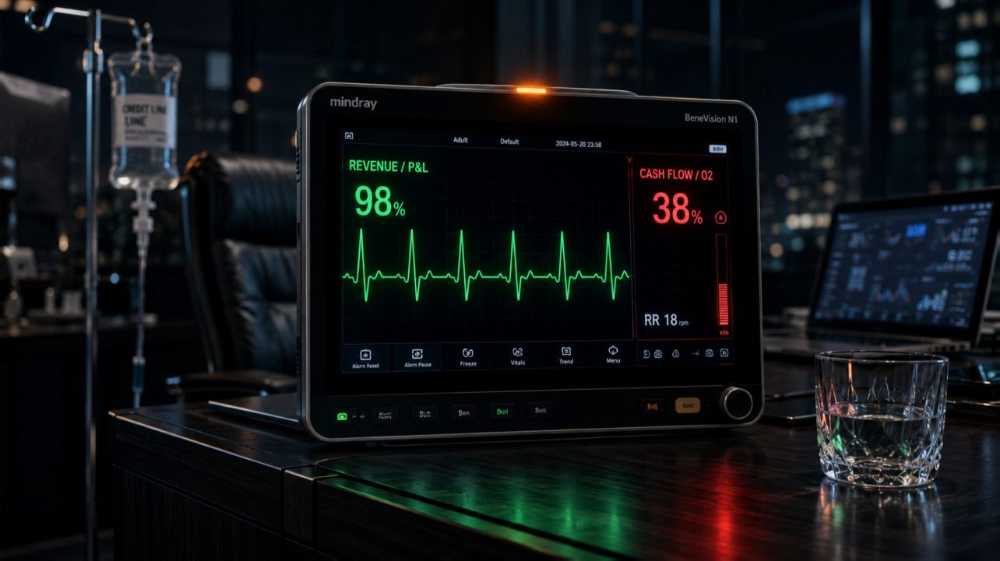

← Цикл «Финансовая архитектура» · 3 из 7
Cash is Oxygen: Почему прибыльные компании умирают

В медицине катастроф есть пугающий феномен — «светлый промежуток». После тяжелой травмы головы пациент приходит в себя. Он в ясном сознании. Адекватно отвечает на вопросы. Уверенно ходит. Шутит. Но врачи неофициально называют это синдромом «поговорил и умер».
Парадокс этого состояния в том, что внешних признаков угрозы жизни нет. Но такая картинка создает опасную иллюзию возврата в норму. Пока пациенту кажется, что худшее позади, внутри черепа растет гематома, создавая отсроченный механизм катастрофы. Когда она достигнет критического размера, давление перекроет кровеносные сосуды. Наступит гипоксия мозга. И с этого момента спасать человека будет уже поздно.
В бизнесе этот сценарий разыгрывается на этапе масштабирования (Scale-up). Открывается окно возможностей. Компания форсирует рост: арендует новые склады. Усиливает маркетинг. Расширяет найм. Для организма бизнеса это период колоссального напряжения и структурного шока.
И вот, после месяцев хаоса и работы на износ, наступает «светлый промежуток». CEO смотрит в отчеты: выручка ставит рекорды, строка прибыли в P&L радует позитивом. Кажется, бизнес здоров и полон сил. Но опытный CFO-Архитектор знает: зеленая строка в отчете и живая кровь в теле бизнеса — не одно и то же. Пока компания празднует бумажную прибыль, деньги застревают в операционном цикле. Бизнес медленно перекрывает сам себе кислород.
Чтобы понять, почему огромные и прибыльные системы внезапно умирают от удушья, нужно разобрать их строгую физиологию.
1. Анатомия дыхания: Кровь, Кислород и Гемоглобин
Главная ловушка масштабирования — считать растущую выручку свежим воздухом.
-
Выручка — это просто Кровь. Это жидкая транспортная среда, которая течет по венам и артериям компании. Объем этой крови (оборот) может быть огромным, но сама по себе она не дает энергии.
-
Кислород — это ваш Кэш. Свободные, ликвидные деньги на счете. То, чем вы прямо сейчас можете оплатить налоги, зарплату или серверы.
-
Кислород и кровь связывает белок — Гемоглобин. Без него кровь — просто биологическая жидкость, а не основа жизни. В бизнесе эту роль выполняет Маржа. Именно она «цепляет» молекулы кэша и делает поток выручки энергетически ценным.
Если в погоне за ростом выручки и долей рынка вы агрессивно скупаете трафик, раздаете скидки или второпях выпускаете брак, то маржа закономерно падает. Наступает финансовая анемия. Выручки много, но она «пустая». Вы прогоняете через счета миллиарды. Сердце казначейства колотится на пределе. Но клетки бизнеса уже задыхаются.
2. Операционный цикл: Работа на выдохе
Вторая ловушка кроется во Времени. Выручка не превращается в деньги мгновенно. Между ними лежит Операционный цикл — разница между длительностью ваших производственных процессов и сроками расчетов с покупателями и поставщиками.
В физиологии это время — задержка дыхания. Человек не всегда дышит равномерно. Тяжелоатлет перед рывком делает вдох и поднимает штангу на задержке дыхания. Кузнец бьет молотом на акцентированном выдохе. Работать в таком режиме — нормально. Длинный операционный цикл (производство сложного оборудования, стройка) — это не болезнь, это специфика анатомии. У тяжеловеса свои легкие, у бегуна — свои. Инноваторы, вроде Илона Маска, могут взламывать рынки и радикально сокращать этот цикл - переиспользование ступени ракеты, вместо выпуска новой. Но в любом бизнесе вы всегда какое-то время находитесь под водой.
3. Где прячется гипоксия: Сшивка Маржи и Времени
Именно здесь, в глубине операционного цикла, и возникает «светлый промежуток».
Вы закрыли крупную сделку. P&L показал прибыль. Но сделка предусматривает 60 дней отсрочки платежа. На эти 60 дней вы задерживаете дыхание. И пока вы ждете возврата денег, ваши постоянные расходы (аренда, ФОТ, налоги) продолжают безжалостно сжигать кислород каждую секунду.
Секрет выживания математически строг: Маржа, полученная в конце цикла, должна с запасом покрывать кислород, сожженный за время задержки дыхания. Если маржа не подстроена под длительность вашего цикла, наступает гипоксия. Прибыль на бумаге есть, а дышать уже нечем.
Ещё одна опасность кроется в том, что вы можете идеально настроить свои расчеты и операционный цикл. Но когда вы всплывете для следующего вдоха, вас может накрыть волна непредсказуемости: клиент задержит платеж, поставщик внезапно потребует аванс, или сделка вовсе рассыплется на середине. Поэтому всегда нужен страховой резерв, маленький «пони-баллон» воздуха в виде свободного кэша или овердрафта.
4. Иллюзия ИВЛ
Можно ли искусственно сократить цикл и работать вообще без задержки дыхания? Да, если использовать авансы покупателей или кредиты подрядчиков. Можно привлечь кредиты банков, если маржа позволяет.
Эти меры принесут облегчение. Дадут сделать необходимые вдохи.
Но это — подключение к аппарату ИВЛ (искусственной вентиляции легких). Грудная клетка бизнеса ритмично двигается, счета пополняются. Но это не самостоятельное дыхание. Жить на авансах — значит дышать чужим воздухом. Стоит потоку новых клиентов замедлиться, аппарат выключат. И пациент, лишенный собственных сильных легких, посинеет за пару дней.
Резюме
Прибыль — это учетная интерпретация реальности. Деньги на счету — это физиологический факт.
Неважно, кто вы — тяжеловес с многомесячным циклом или юркий ритейлер. Вас убивает не специфика вашего цикла. Вас убивает момент, когда бизнесу нужно вдохнуть раньше, чем деньги вернулись обратно в кровь.
Финансовая архитектура проектируется так, чтобы воздуха хватало на всё время погружения, уровень гемоглобина оставался в норме, а потребность в искусственной вентиляции сводилась к минимуму.
Но даже идеально рассчитанный запас кислорода не спасет, если мозг вовремя не получит сигнал об опасности. О том, как устроена «Нервная система» бизнеса, и почему без мгновенной сшивки данных от станка до полки вы можете впасть в «азотную эйфорию» или получить паралич тела, мы поговорим в следующей статье.